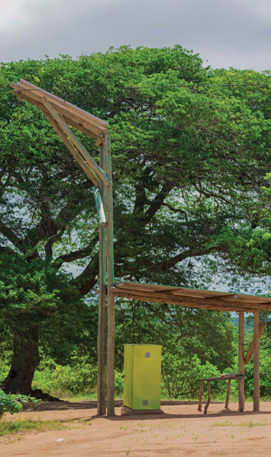

Se encuentra en plena calle, rodeada de los tonos verdes de los árboles, paisaje que le es común. E inmediatamente entendemos, por la estructura, de dónde viene el nombre. Vemos el tronco, el largo cuello hecho de maderas gruesas que sostiene una cabeza ligeramente vuelta hacia el cielo, como si pudiera absorber todos los rayos del sol, es donde se montan los paneles. La estructura utiliza energía solar fotovoltaica para alimentar un armario técnico, como si fuera un gran corazón amarillo bombeando energía a 10 tomas de (re)carga de teléfonos móviles.
Girafa Solar, un proyecto que llega a la localidad de Mangunze, distrito de Chongoene, Gaza, de la mano de la Fundación Carlos Morgado y financiado por la Embajada de Irlanda, fue inaugurado en 2020. En una localidad de más de 10.000 habitantes a la que energía la energía convencional tardó en llegar, sin pretender ser la luz al final del túnel, era energía en medio de la calle. Es energía limpia, que se renueva cada amanecer, pero que sigue viva incluso después de la puesta del sol. Docenas de teléfonos celulares son (re)cargados diariamente. Después de todo, el número de beneficiarios supera los 3000, revela el padre Juan Gabriel Arias, de la Misión São Benedito Mangunze, a cargo de la gestión del proyecto. Pero siempre pueden ser más. “Hay muchas personas que al pasar también aprovechan para (re)cargar sus celulares” – Padre Juan Gabriel Arias.
Clara Manuel Mimbire se vio doblemente beneficiada por el proyecto. Más que (re)cargar tu móvil, Girafa Solar se ha convertido en tu lugar de trabajo. Ella y otra acompañante se encargan de limpiar y ayudar a los demás usuarios. Nacida en Macia, parte de su vida en Maputo, fue el amor lo que la llevó a Mangunze en 2007. Pero nunca se acostumbró a la vida sin electricidad. “Antes de Girafa Solar era un gran sufrimiento, la vida era muy difícil”, dice.
MÁS QUE UN ESPACIO PARA (RE)CARGAR TELÉFONOS MÓVILES, TAMBIÉN ES UN ESPACIO DE ENCUENTRO, DE ENCUENTRO COMUNITARIO, DE DEBATE.
Por eso también, aún hoy, con algunas zonas de Mangunze con conexiones eléctricas convencionales, Girafa Solar sigue siendo un referente. Más que un espacio de (re)carga de móviles, como nos cuentan el Padre y Clara, es también un espacio de encuentro, de encuentro comunitario y de debate. Y la radio, que lleva adosada, pone la banda sonora a los partidos de fútbol que se juegan en un campo cercano. Mientras el sol anuncie el día, en Mangunze habrá energía y vida. Y sigue siendo bueno.